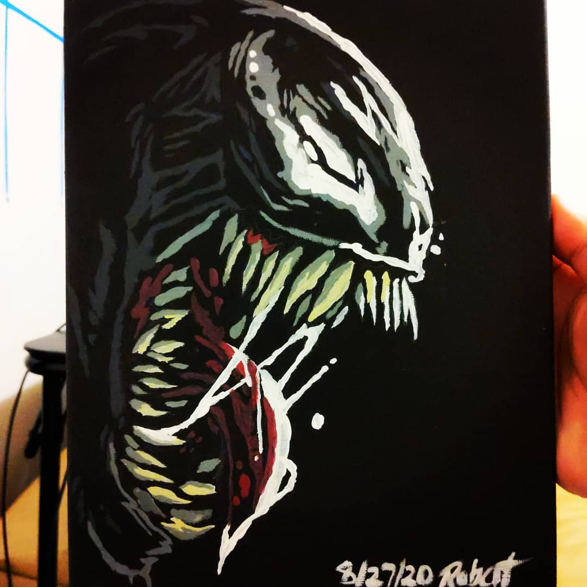
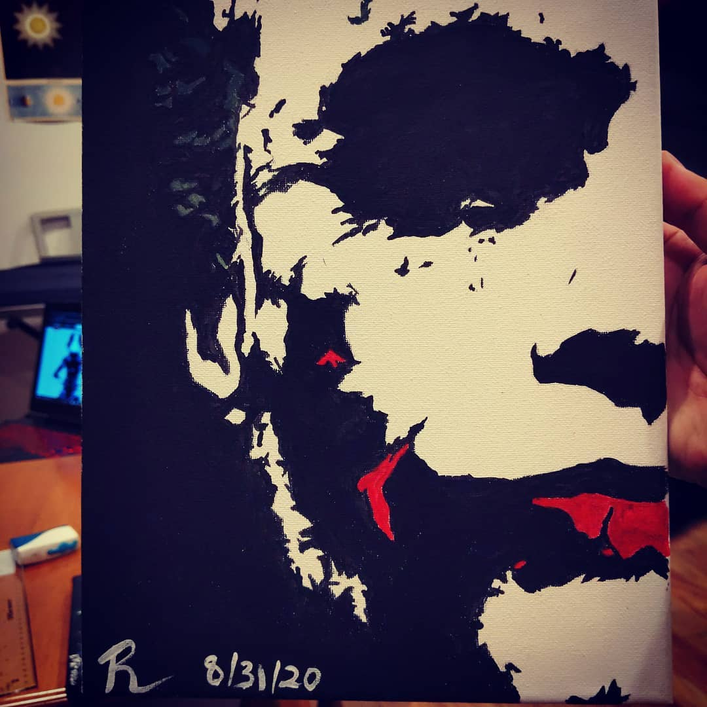

If you could say it in words, there would be no reason to paint - Edward Hopper.
I recently set out to grow my creativity on the painter's canvas
but my artistic ability can be summed up in one rigid term: recreation. What I
see, I can muster out a decent copy. As I've spent most of my life with a pencil
and paper, I am most comfortable with black and white sketches. You can see in my
first couple of pieces I stuck with my comfort zone limiting my color spectrum in recreating
portraits consistent with a theme I obsessed over at the time: villains.


After getting comfortable, I decided to try to capture the spirit of adventure in an original triple-canvas
piece that challenged both my limits of recreation and my aversion to a more advanced
application of color. Blending the sunset sky into the starry beyond proved a frustrating, yet,
in hindsight, rewarding experience.
Looking forward, as I've recently been having fun learning about marine life, I hope to continue
to capture the spirit of adventure in a more ocean-themed direction. Monterey Bay Aquarium, anyone?
A painter paints pictures on canvas, but musicians paint their pictures on silence - Leopold Stokowski.
Like my painting/sketching experience, my initial exposure to music was limited. The classical radio
channel that my dad lived by was the well that my musical taste was born into. When I finally got bored
one day and happened across a Bay Area Hip-Hop and R&B radio station, I instantly fell deeply in love
with Blues and Soul music. I was enamored by how musicians, regardless of instrument, can bring a life
into music unexplainable by words. I marveled at musicians who could 'freestyle' and produce a sound so
unique and warm seemingly out of thin air. At some point, I enjoyed a freestyle session so much I transcribed
it note for note and dared to put my recreation of it onto social media:
As much as I appreciated the smooth, sweet molasses that flowed out of my radio, I myself was no John
Legend. Throughout the years since then, I've sought to grow in my vocal prowess by serving in my
worship team at church, and even at one point taking vocal lessons in the summer. As I continually gain a
firmer grasp on the basics of singing, I really hope to start exploring ways to foster creativity in music as
I have began on the canvas.
Programming isn't about what you know; it's about what you can figure out - Chris Pine.
I'm convinced if I asked artists or musicians whether coding can be uttered with the same breath as their
respective trades, I'd get a few laughs... and to their credit, coding is no stroke of a brush. An introduction to
coding presents a discipline that's rigid, confined to predefined functions and logic progressions and regular
expressions. However, like any other discipline, as you build a decent coding foundation and explore more advanced topics
a world of possibilities open up to you. We see evidence of this in our daily lives: code runs through the very
appliances in our kitchens, the vehicles we drive, the tools we depend on at work. Beyond necessity, code even
pervades our hobbies and comforts. Throughout the years, I've dabbled in a few of the many avenues that a software
developer can build a career in and my efforts have not returned void. I hope to eventually dive into the mysterious
world of machine learning as I expand my knowledge of coding.